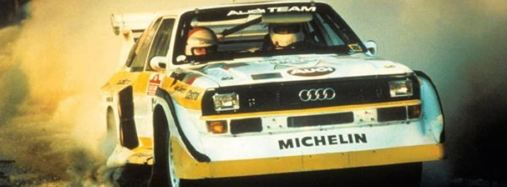

En este articulo veremos algunos de los coches que mas iconicos han sido en la historia del rally.
Es muy complejo poder hacer una selección de los mejores coches de rally de la historia, ya que es imposible hacer comparaciones entre ellos al cambiar las especificaciones de estos en cada temporada, aunque basándonos en sus mayores logros en competición, así como su relevancia en el mundial, podemos realizar esta selección, ya que citaremos exclusivamente los 15 que consideramos mejores.
Con una impresionante aerodinámica. Su tracción total empezó el proceso de sustitución de la hasta entonces tracción trasera en competición, dando especial relevancia a su marca.
Fue en 1981 cuando se presentó y quedó tercero en el mundial, pasando a segundo en 1982 con Michelle Mouton pilotando, y obteniendo el título de pilotos en 1983 con el mítico Hannu Mikkola. En 1984 se alzaron primeros con Stig Blomqvist como piloto y también primeros como marca constructora.
Contaba con un motor de 2,1 litros con 510 CV de potencia y 435 Nm de par motor máximo, consiguiendo los 100 km/h desde parado en tan solo 3,1 segundos.